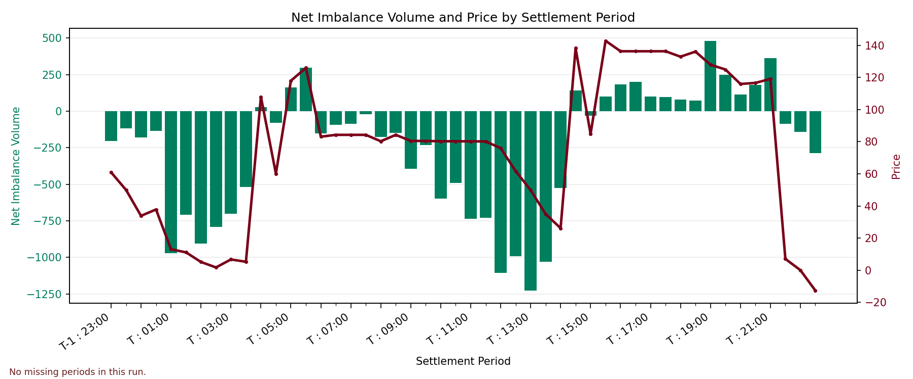

Net Imbalance Volume with Price Overlay
Bars show net imbalance volume and the overlaid line shows system price (buy/sell equivalent); missing periods are shaded light red.

| Metric | Value | Methodology |
|---|---|---|
| Total daily imbalance cost | 923,780.19 | Calculated on reported (non-missing) periods only: sum(netImbalanceVolume * midpointPrice), midpointPrice = (systemSellPrice + systemBuyPrice) / 2. |
| Daily imbalance unit rate | 61.3140 | Calculated on reported (non-missing) periods only: total daily imbalance cost / sum(abs(netImbalanceVolume)). |
Bars show net imbalance volume and the overlaid line shows system price (buy/sell equivalent); missing periods are shaded light red.
